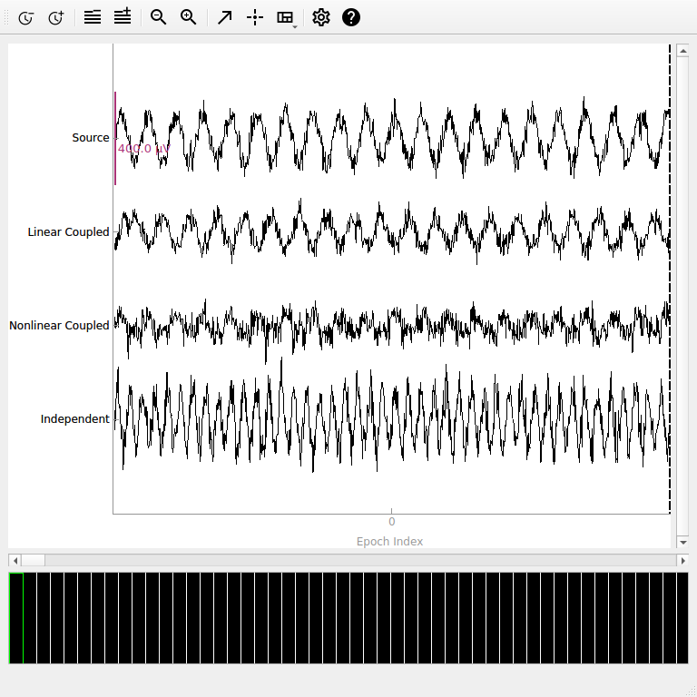
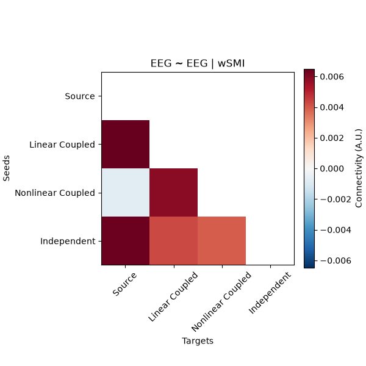
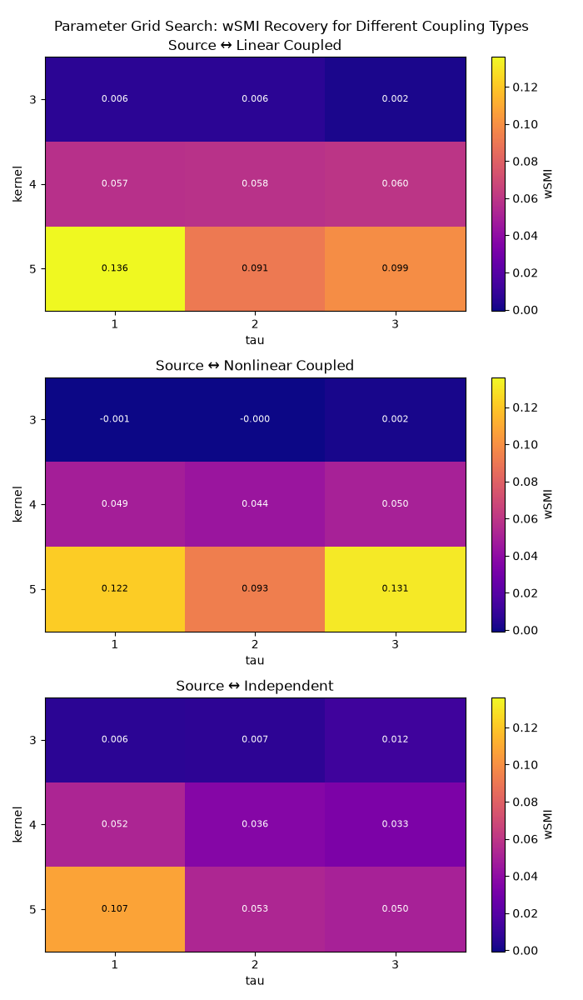
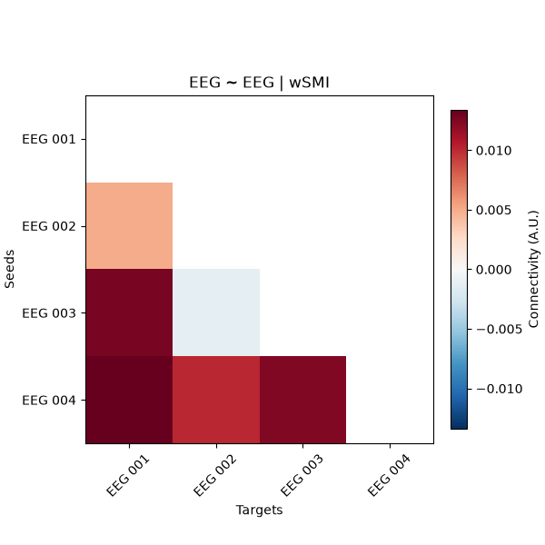

Note
Go to the end to download the full example code.
Compute connectivity using weighted symbolic mutual information (wSMI)#
This example demonstrates the weighted Symbolic Mutual Information (wSMI) connectivity measure [1] for detecting nonlinear dependencies between brain signals. wSMI is particularly useful for studying consciousness and information integration in neural networks as it can capture complex, nonlinear relationships that linear methods might miss.
The method works by:
Converting time series to symbolic patterns (ordinal patterns)
Computing mutual information between symbolic sequences
Weighting patterns based on their temporal structure
This makes wSMI sensitive to information flow and temporal dependencies that are characteristic of conscious brain states.
# Authors: Giovanni Marraffini <giovanni.marraffini@gmail.com>
# Laouen Belloli <laouen.belloli@gmail.com>
#
# License: BSD (3-clause)
import matplotlib.pyplot as plt
import mne
import numpy as np
import pandas as pd
import seaborn as sns
from matplotlib import colors
from mne.datasets import sample
from mne_connectivity import wsmi
Simulating Data with Different Connectivity Patterns#
To demonstrate wSMI’s capabilities, we’ll create synthetic EEG data with different types of connectivity: linear coupling, nonlinear coupling, and independent signals.
sfreq = 500
n_epochs = 50
epoch_length = 2.0
n_channels = 4
n_times = int(sfreq * epoch_length)
# Create time vector
times = np.arange(n_times) / sfreq
# Initialize data array (n_epochs, n_channels, n_times)
data = np.zeros((n_epochs, n_channels, n_times))
# Set random seed for reproducibility
rng = np.random.default_rng(42)
for epoch in range(n_epochs):
# Channel 1: Source signal (alpha rhythm + noise)
# Scale to realistic EEG values (hundreds of microvolts)
alpha_freq = 10 + rng.normal(0, 0.5) # Variable alpha frequency
ch1 = 100e-6 * (
np.sin(2 * np.pi * alpha_freq * times) + 0.3 * rng.standard_normal(n_times)
)
# Channel 2: Linear coupling to channel 1 (strong connectivity expected)
coupling_strength = 0.7 + rng.normal(0, 0.1)
delay_samples = int(0.05 * sfreq) # 50ms delay
ch2_base = coupling_strength * np.roll(ch1, delay_samples)
ch2 = ch2_base + 20e-6 * rng.standard_normal(n_times)
# Channel 3: Nonlinear coupling to channel 1 (wSMI should detect this)
# Phase-amplitude coupling + quadratic transformation
ch3_phase = np.angle(np.sin(2 * np.pi * alpha_freq * times))
ch3_amp = 0.5 * (1 + np.tanh(2 * ch1 / 50e-6)) # Nonlinear transformation
ch3 = 80e-6 * ch3_amp * np.sin(ch3_phase + np.pi / 4) + 30e-6 * rng.standard_normal(
n_times
)
# Channel 4: Independent signal (low connectivity expected)
beta_freq = 20 + rng.normal(0, 1)
ch4 = 120e-6 * (
np.sin(2 * np.pi * beta_freq * times) + 0.4 * rng.standard_normal(n_times)
)
data[epoch, 0, :] = ch1
data[epoch, 1, :] = ch2
data[epoch, 2, :] = ch3
data[epoch, 3, :] = ch4
# Create Epochs object
ch_names = ["Source", "Linear Coupled", "Nonlinear Coupled", "Independent"]
info = mne.create_info(ch_names, sfreq=sfreq, ch_types="eeg")
epochs = mne.EpochsArray(data, info, tmin=0.0, verbose=False)
Visualizing the Synthetic Data#
Let’s examine our synthetic data to understand the different connectivity patterns we’ve created.
# Plot a sample of the data
fig = epochs.plot(n_epochs=1, scalings={"eeg": 2e-4}, show_scrollbars=False)

Computing wSMI with Default Parameters#
First, let’s compute all-to-all wSMI with default parameters. The two key parameters are:
kernel: Number of time points in each symbolic pattern (here 3). This controls pattern complexity - larger values detect more complex patterns but require more data. Values of 3-5 are typical.tau: Time delay between pattern elements in samples (here 1). This controls temporal resolution -tau = 1uses consecutive samples, larger values focus on slower dynamics but reduce effective sampling rate.
Important: Poor parameter choices can miss nonlinear coupling! We’ll explore this systematically below.
Other defaults:
Smart anti-aliasing (
anti_aliasing="auto") - applies filtering only if neededWeighted symbolic mutual information (
weighted=True)All channel pairs as a lower-triangular array (
indices=None)Individual epoch connectivity (
average=False)
# Compute wSMI with default parameters (individual epoch connectivity)
conn_default = wsmi(epochs, kernel=3, tau=1)
print(
f"wSMI connectivity shape: {conn_default.get_data('dense').shape} "
"(n_epochs, n_channels, n_channels)"
)
print(f"Method: {conn_default.method}")
print(f"Number of unique connections: {n_channels * (n_channels - 1) // 2}")
# Show connectivity for a few example pairs from first and second epochs
print("\nExample connectivity values (showing epoch-to-epoch variability):")
indices = np.tril_indices(n_channels, k=-1) # lower-triangular indices
names = conn_default.attrs["node_names"]
conn_matrix = conn_default.get_data("dense")
for i, j in zip(indices[0][:3], indices[1][:3]): # First 3 pairs only
conn_val_ep1 = conn_matrix[0, i, j] # First epoch, k-th connection
conn_val_ep2 = conn_matrix[1, i, j] # Second epoch, k-th connection
print(
f"{' ↔ '.join((names[i], names[j]))}: "
f"Epoch 1: {conn_val_ep1:.4f}, Epoch 2: {conn_val_ep2:.4f}"
)
Processing 50 epochs, 4 channels (['Source', 'Linear Coupled', 'Nonlinear Coupled', 'Independent']), 1000 time points per epoch.
using all connections for lower-triangular matrix
Auto anti-aliasing: Existing lowpass (250.00 Hz) > required (166.67 Hz). Applying filter.
Applying anti-aliasing filter at 166.67 Hz
Performing symbolic transformation...
Computing wSMI for 6 unique symbols...
wSMI computation finished.
wSMI connectivity shape: (50, 4, 4) (n_epochs, n_channels, n_channels)
Method: wSMI
Number of unique connections: 6
Example connectivity values (showing epoch-to-epoch variability):
Linear Coupled ↔ Source: Epoch 1: -0.0129, Epoch 2: 0.0069
Nonlinear Coupled ↔ Source: Epoch 1: -0.0084, Epoch 2: -0.0089
Nonlinear Coupled ↔ Linear Coupled: Epoch 1: -0.0019, Epoch 2: 0.0230
Visualizing wSMI Connectivity Results#
# Now compute averaged connectivity for visualization
conn_ave = wsmi(epochs, kernel=3, tau=1, average=True)
# Get connectivity matrix for visualization
conn_matrix = conn_ave.get_data("dense")
conn_matrix += conn_matrix.T # make matrix symmetric
# Use pandas and seaborn for cleaner visualization
df = pd.DataFrame(data=conn_matrix, index=names, columns=names)
ax = sns.heatmap(df, annot=True, fmt="0.4f", cmap="viridis", vmin=0)
ax.set_title("wSMI Connectivity Matrix\n(Higher values = stronger connectivity)")
ax.tick_params(axis="x", labelrotation=45)
ax.figure.tight_layout()

Processing 50 epochs, 4 channels (['Source', 'Linear Coupled', 'Nonlinear Coupled', 'Independent']), 1000 time points per epoch.
using all connections for lower-triangular matrix
Auto anti-aliasing: Existing lowpass (250.00 Hz) > required (166.67 Hz). Applying filter.
Applying anti-aliasing filter at 166.67 Hz
Performing symbolic transformation...
Computing wSMI for 6 unique symbols...
wSMI computation finished.
Note: Small negative values can occur for wSMI, reflecting estimator noise or a lack of information sharing above chance, rather than an anti-coupling of signals.
Exploring Parameter Effects: Kernel and Tau#
The kernel and tau parameters control the temporal scale of the analysis:
kernel: Number of time points in each symbolic pattern (2-7 typical)tau: Time delay between pattern elements (1 = consecutive samples)
Let’s explore how these parameters affect connectivity detection systematically using a grid search approach to see which combinations recover the strongest coupling for each channel pair.
# Define parameter ranges for comprehensive exploration
kernels = [3, 4, 5]
taus = [1, 2, 3]
# Define connection indices and get target channel names
indices = ([0, 0, 0], [1, 2, 3]) # Source channel to all others
target_names = [ch_names[idx] for idx in indices[1]]
results = np.zeros((len(indices[0]), len(kernels), len(taus)))
# Perform grid search
for i, kernel in enumerate(kernels):
for j, tau in enumerate(taus):
conn = wsmi(
epochs, kernel=kernel, tau=tau, indices=indices, average=True, verbose=False
)
# Extract connections from source channel to each target channel
results[:, i, j] = conn.get_data()
# Create heatmaps showing parameter effects for each coupling type
fig, axes = plt.subplots(3, 1, figsize=(7, 12))
norm = colors.Normalize(vmin=results.min(), vmax=results.max())
for idx, data in enumerate(results):
im = axes[idx].imshow(data, cmap="plasma", aspect="auto", norm=norm)
axes[idx].set_title(f"Source ↔ {target_names[idx]}")
axes[idx].set_xlabel("tau")
axes[idx].set_ylabel("kernel")
axes[idx].set_xticks(range(len(taus)))
axes[idx].set_xticklabels(taus)
axes[idx].set_yticks(range(len(kernels)))
axes[idx].set_yticklabels(kernels)
for ii in range(len(kernels)):
for jj in range(len(taus)):
text = axes[idx].text(
jj,
ii,
f"{data[ii, jj]:.3f}",
ha="center",
va="center",
color="black" if data[ii, jj] > data.max() / 2 else "white",
fontsize=8,
)
plt.colorbar(im, ax=axes[idx], label="wSMI")
plt.suptitle("Parameter Grid Search: wSMI Recovery for Different Coupling Types")
plt.tight_layout()

Comparing wSMI vs SMI (Weighted vs Unweighted)#
wSMI applies binary weights that set to zero the mutual information from:
Identical symbol pairs (which could arise from common sources)
Opposed symbol pairs (which could reflect two sides of a single dipole)
This weighting scheme discards spurious correlations from common sources while preserving genuine information sharing between distant brain regions.
Interpretation: The weighting reduces artifacts but may also affect genuine connectivity estimates. The net effect depends on the balance between artifact reduction and genuine signal preservation in your specific data.
# Compute both weighted and unweighted versions
conn_wsmi = wsmi(
epochs,
kernel=3,
tau=1,
indices=indices,
weighted=True,
average=True,
verbose=False,
)
conn_smi = wsmi(
epochs,
kernel=3,
tau=1,
indices=indices,
weighted=False,
average=True,
verbose=False,
)
# Extract connectivity values (Source ↔ Linear Coupled)
wsmi_values = conn_wsmi.get_data()[0]
smi_values = conn_smi.get_data()[0]
print("\nComparison of wSMI vs SMI:")
print(f"wSMI (weighted): {wsmi_values:.3f}")
print(f"SMI (unweighted): {smi_values:.3f}")
print(f"Difference: {smi_values - wsmi_values:.3f}")
Comparison of wSMI vs SMI:
wSMI (weighted): 0.006
SMI (unweighted): 0.011
Difference: 0.004
Anti-aliasing: Understanding the Preprocessing#
The wsmi() function includes anti-aliasing filtering to
prevent artifacts when tau > 1. This filtering is crucial for accurate results, as
otherwise high-frequency components can alias into lower frequencies. The
anti_aliasing parameter accepts three values:
“auto” (default):
Smart detection based on data type and preprocessing history
For
mne.Epochsinputs: checksinfo['lowpass']to see if data has been lowpass filtered, skipping the anti-aliasing filter if data is already filtered at or below the required frequencyFor array inputs: always applies an anti-aliasing filter (preprocessing unknown)
True:
Always applies an anti-aliasing filter at
sfreq / kernel / tauHzUse when you want to ensure filtering regardless of preprocessing history
False:
Never applies filtering - use only if you’ve already filtered appropriately
Warning: Results may be inaccurate without proper filtering
Why tau affects anti-aliasing:
The tau parameter determines the time delay between pattern elements, effectively
reducing your sampling rate for symbolic analysis. For example, with sfreq=200 Hz
and tau=4, the effective sampling rate becomes 50 Hz (Nyquist at 25 Hz). Any
signal components above this Nyquist frequency will alias and corrupt the ordinal
patterns.
The anti-aliasing filter frequency is calculated as sfreq / kernel / tau. For
instance, with sfreq=200, kernel=3, and tau=4, the cutoff is
200/3/4 ≈ 16.7 Hz. This ensures all spectral content above the effective Nyquist
is removed before symbolic transformation.
Keep in mind that higher tau values focus the analysis on slower dynamics. For
example, tau=1 captures sample-to-sample coupling, while tau=4 captures
coupling at a 4x coarser temporal resolution.
Computing wSMI on Real EEG Data#
Now let’s apply wSMI to real EEG data from the MNE sample dataset. We’ll use the pre-filtered data and do minimal preprocessing.
# Load sample data (already filtered 0.1-40 Hz)
data_path = sample.data_path()
raw_fname = data_path / "MEG" / "sample" / "sample_audvis_raw.fif"
event_fname = data_path / "MEG" / "sample" / "sample_audvis_raw-eve.fif"
# Load data and events
raw = mne.io.read_raw_fif(raw_fname, verbose=False)
events = mne.read_events(event_fname, verbose=False)
# Pick 4 EEG channels - no additional filtering needed
eeg_picks = ["EEG 001", "EEG 002", "EEG 003", "EEG 004"]
raw.pick(eeg_picks)
n_eeg = len(raw.ch_names)
# Simple epoching around visual stimuli (event 3)
epochs_real = mne.Epochs(
raw,
events,
event_id=3,
tmin=-0.1,
tmax=0.4,
baseline=None,
preload=True,
verbose=False,
)
print(f"Real EEG data: {epochs_real}")
print(f"Channels: {epochs_real.ch_names}")
# Compute wSMI on real EEG data
conn_real = wsmi(epochs_real, kernel=3, tau=1, average=True, verbose=False)
conn_real_matrix = conn_real.get_data(output="dense")
conn_real_matrix += conn_real_matrix.T # make matrix symmetric
conn_real_names = conn_real.attrs["node_names"]
# Plot connectivity matrix
fig, ax = plt.subplots(1, 1, figsize=(8, 6))
im = ax.imshow(conn_real_matrix, cmap="viridis", vmin=0)
ax.set_xticks(range(n_eeg))
ax.set_yticks(range(n_eeg))
ax.set_xticklabels(epochs_real.ch_names)
ax.set_yticklabels(epochs_real.ch_names)
# Add connectivity values
for i in range(n_eeg):
for j in range(n_eeg):
text = ax.text(
j,
i,
f"{conn_real_matrix[i, j]:.3f}",
ha="center",
va="center",
color="black"
if conn_real_matrix[i, j] > conn_real_matrix.max() / 2
else "white",
)
plt.colorbar(im, ax=ax, label="wSMI")
plt.title("wSMI Connectivity: Real EEG Data\n(Visual stimulus epochs)")
plt.tight_layout()
plt.show()

Real EEG data: <Epochs | 73 events (all good), -0.1 – 0.4 s (baseline off), ~3.6 MiB, data loaded,
'3': 73>
Channels: ['EEG 001', 'EEG 002', 'EEG 003', 'EEG 004']
The connectivity matrix shows wSMI values between electrode pairs during visual stimulus processing. Higher values indicate stronger information sharing between brain regions, which may reflect coordinated visual processing networks and task-related functional connectivity.
Tips for Large Datasets and Group Analysis#
Selective connectivity analysis: For large datasets with many channels, use the
indices parameter to compute connectivity only between specific channel pairs of
interest, which can significantly reduce computation time.
Cross-subject analysis: For group-level or between-group analysis, it’s often
easier to work with within-subject averages over epochs by setting average=True.
This provides one connectivity value per connection per subject, which can then be
used for statistical comparisons across subjects.
Summary and Best Practices#
When to use wSMI:
Studying nonlinear brain connectivity
Investigating information integration and consciousness
Analyzing temporal dependencies in neural signals
When linear methods (coherence, PLV) may miss important relationships
Parameter selection guidelines:
kernel: Start with 3, increase to 4-5 for more complex patternstau: Use 1 for high-resolution analysis, 2-3 for slower dynamicsanti_aliasing: Keep"auto"for smart determination of appropriate filteringweighted: KeepTruewhen spurious correlations are a concern
Data requirements:
Sufficient epoch length: At least
tau*(kernel-1)+1samples per epochAdequate SNR: wSMI is robust but benefits from clean data
Stationary signals: Works best with preprocessed, artifact-free data
Interpretation:
Values near 0: Minimal information sharing
Higher values: Stronger information integration
Compare relative values rather than absolute thresholds
Consider the temporal scale defined by your
tauparameter: highertauvalues focus the analysis on slower dynamics
References#
Total running time of the script: (0 minutes 13.731 seconds)